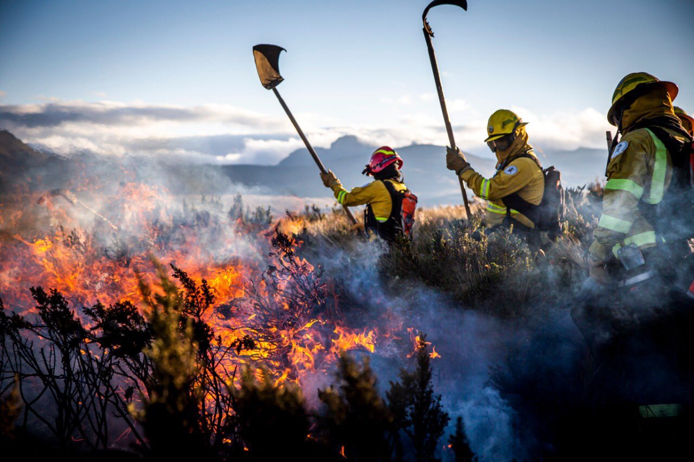

Efectos que se generan en el clima y el medio ambiente en las áreas afectadas.
Aumento de la contaminación del aire:
Los incendios liberan grandes cantidades de dióxido de carbono (CO2), monóxido de carbono (CO), partículas (PM2,5) y otros contaminantes tóxicos a la atmósfera. Afectan la calidad del aire, causan problemas respiratorios y de salud y contribuyen al cambio climático a través de las emisiones de gases de efecto invernadero.
Alteración de la biodiversidad:
Los incendios destruyen los hábitats naturales y afectan la biodiversidad, incluidas las especies vegetales y animales, en la zona afectada. A largo plazo, estos impactos pueden alterar el equilibrio del ecosistema y alterar los patrones climáticos regionales.
Efectos en las lluvias y el clima
Los incendios podrían alterar los patrones de lluvia en zonas como Quito. La pérdida de vegetación reduce la capacidad de la tierra para absorber agua, aumentando la escorrentía y aumentando el riesgo de inundaciones en zonas vulnerables.
Impacto en la vida diaria
Aumento de enfermedades respiratorias: El aire contaminado puede llevar a un incremento en consultas médicas por enfermedades respiratorias, alergias o complicaciones pulmonares, especialmente en niños, ancianos y personas con sistemas inmunitarios comprometidos.
